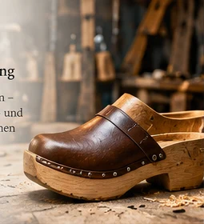
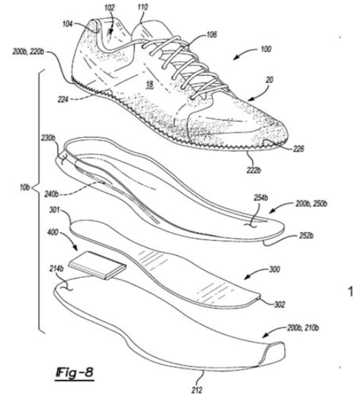
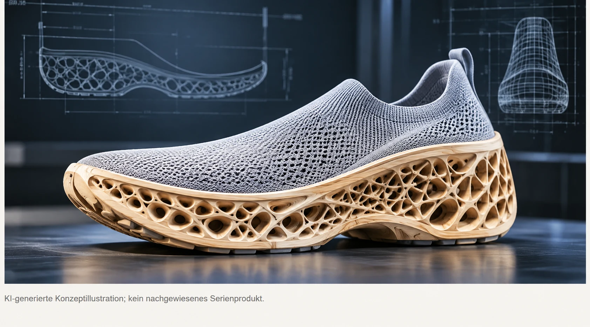
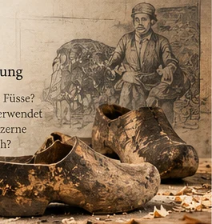
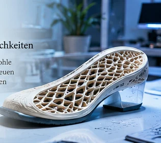

Quo vadis, Holzschuh?
Kann die hölzerne Schuhsohle wieder ein breiteres Publikum erreichen? Oder wird Holz künftig eher als unsichtbarer Werkstoff in modernen Schuhen eingesetzt? Vielleicht sind beide Wege möglich. Wir betrachten die Holzsohle nicht als fertige Antwort, sondern als Ausgangspunkt für technische und gesellschaftliche Fragen.
Unsere Leitidee: Die Zukunft muss nicht aussehen wie die Vergangenheit. Holz kann sichtbar bleiben, verborgen eingebaut werden oder mit anderen Materialien eine neue Konstruktion bilden.
Fünf mögliche Entwicklungswege
1. Der sichtbare Holzschuh von morgen
Ein klassischer Holzschuh lässt sich neu denken: ergonomisch geformtes Holz, ein leichteres Obermaterial und eine geeignete, profilierte Laufsohle. Eine solche Kombination könnte die charakteristische Optik bewahren und zugleich Anforderungen an Alltagstauglichkeit, Griffigkeit und Geräuschentwicklung aufnehmen. Ob sie tatsächlich komfortabler oder sicherer wäre, lässt sich ohne Versuche nicht behaupten.

2. Holz als technische Platte im Sportschuh
Hier gibt es einen konkreten Patentbeleg: PUMA SE erhielt am 2. April 2024 das US-Patent US 11,944,153 B2 – Articles of footwear with engineered wood. Beschrieben werden unter anderem Sohlen mit einer Platte aus verdichtetem Holz zwischen Dämpfungselementen. Das ist ein technisches Schutzrecht – kein Nachweis für ein erhältliches Serienprodukt.
Das Beispiel zeigt, dass Holz nicht zwangsläufig die gesamte Sohle bilden muss. Es könnte als konstruktives Element mit anderen Werkstoffen zusammenarbeiten. Welche mechanischen Vorteile das gegenüber etablierten Platten bietet, ist damit noch nicht bewiesen.

3. Gedruckte Komponenten mit Holzanteil
Im 3D-Druck lassen sich Materialien verarbeiten, die Holzmehl oder Holzfasern enthalten. Meist sind dies Verbundstoffe mit einer Kunststoffmatrix und keine Sohlen aus massivem Holz. Für einen tragbaren Schuh wären insbesondere wiederholte Biegebelastung, Feuchtigkeit, Bruchverhalten und Abrieb zu untersuchen.
Ein Gitterdesign kann optisch faszinieren und Material einsparen; seine Tragfähigkeit muss jedoch konstruktiv berechnet und getestet werden. Das unten gezeigte Bild ist deshalb eine freie Konzeptillustration, keine technische Zeichnung.

4. Massgefertigte Holzsohlen durch digitale Bearbeitung
Digitale Fussvermessung und CNC-Fräsen eröffnen einen anderen Weg: Eine Sohle könnte individuell aus einem Holzrohling gefräst werden. Anders als beim 3D-Druck wird hier Material abgetragen statt schichtweise aufgebaut. Spannend wäre die Frage, ob eine solche Fertigung auch für kleinere Betriebe wirtschaftlich sein könnte.
5. Der reparierbare Hybrid-Holzschuh
Eine eigene Projektidee ist ein modular aufgebauter Schuh: hölzerne Tragstruktur, separate Dämpfung und austauschbare Laufsohle. Einzelne Verschleissteile könnten ersetzt werden, ohne den ganzen Schuh wegzuwerfen. Ob das ökologisch vorteilhaft ist, hängt allerdings von Materialwahl, Verbindungen, Transport, Haltbarkeit und tatsächlicher Reparatur ab.
Welche Laufsohle gehört unter Holz?
Ein Holzschuh muss nicht mit blankem Holz den Boden berühren. Je nach Einsatzzweck kommen profilierte Gummimischungen, geeignete thermoplastische Laufsohlen oder mehrschichtige Konstruktionen infrage. Die Materialbezeichnung allein sagt aber noch wenig über die Rutschfestigkeit aus: Profil, Härte, Bodenbelag, Nässe und Verschleiss spielen zusammen.
| Bauteil | Mögliche Aufgabe | Offene Prüfung |
|---|---|---|
| Holz / Holzverbund | Form, Stabilität, Gestaltung | Gewicht, Biegung, Feuchte |
| Dämpfungsschicht | Stossaufnahme und Laufgefühl | Alterung, Komfort, Verbindung |
| Profilierte Laufsohle | Bodenkontakt und Verschleissschutz | Rutschverhalten, Abrieb, Austausch |
Eine wissenschaftliche Übersichtsarbeit zur Rutschprävention bei Schuhen betont, dass Reibung vom Zusammenspiel aus Laufsohlenmaterial, Profil, Untergrund und Verunreinigungen abhängt. Eine universell «beste» Laufsohle lässt sich daraus nicht ableiten.
Was wäre nötig, damit Holzschuhe mainstreamfähig werden?
Eine überzeugende Form allein genügt nicht. Für eine breitere Akzeptanz müssten mehrere Fragen beantwortet werden: Wie fühlt sich der Schuh nach einem ganzen Arbeitstag an? Wie schwer ist er? Wie verhält er sich bei Regen, auf glatten Böden und nach längerem Gebrauch? Kann er repariert werden? Und welchen Preis würden Käufer dafür bezahlen?
Wir möchten diese Fragen später mit Herstellern, Schuhtechnikern und Trägerinnen und Trägern diskutieren. Positive wie skeptische Einschätzungen gehören dazu.
Unsere Denkwerkstatt: drei eigene Konzepte
- Holzschuh 2.0: sichtbare Holzsohle mit austauschbarem, rutschhemmendem Laufprofil.
- WoodCore: dünnes, geprüftes Holzverbundelement innerhalb eines gedämpften Alltagsschuhs.
- ReSole: modularer Schuh, dessen hölzerner Kern länger genutzt wird als seine austauschbaren Verschleissteile.
Diese Bezeichnungen sind vorläufige Arbeitstitel für Ideen dieses Forschungsprojekts, keine angekündigten Produkte oder geprüften Marken.


Spinnerei – unsere Ideenwerkstatt
Hier dürfen wir bewusst weiterdenken. Die folgenden Ansätze sind ungeprüfte Hypothesen, keine fertigen Konstruktionen. Wir formulieren jeweils ein Problem, einen möglichen Lösungsweg und die Frage, die ein Versuch beantworten müsste.
Wie wird eine Holzsohle beweglicher?
Idee: Statt einer durchgehenden starren Holzsohle könnten mehrere Holzsegmente mit flexiblen Zwischenstücken verbunden werden. Denkbar wäre auch eine dünne Holzschicht über einer beweglicheren Trägerkonstruktion.
Zu prüfen: Wo muss sich ein Schuh beim Abrollen tatsächlich biegen? Wie wirken sich Fugen auf Stabilität, Haltbarkeit und das Eindringen von Schmutz aus?
Wie lässt sich Gewicht sparen?
Idee: Hohlräume, Rippen oder lokal verstärkte Holzverbundelemente könnten Material nur dort einsetzen, wo es gebraucht wird. Ein digitales Modell könnte unterschiedliche Geometrien vergleichbar machen.
Zu prüfen: Wie verändern solche Strukturen Bruchfestigkeit, Gewicht, Fertigungsaufwand und Reparaturfähigkeit?
Wie bleibt die Sohle bei Regen alltagstauglich?
Idee: Das Holz könnte geschützt oberhalb einer auswechselbaren, profilierten Laufsohle liegen. Oberflächenbehandlungen wären ergänzend zu untersuchen, ersetzen aber keine Prüfung des Rutschverhaltens.
Zu prüfen: Wie reagieren Holz, Klebstellen und Verbindungen auf wiederholtes Nasswerden und Trocknen? Welche Laufsohle funktioniert auf welchen Untergründen?
Wie entsteht Komfort ohne Verlust des Holzcharakters?
Idee: Ein individuell gefrästes Fussbett könnte mit einer separaten Dämpfungsschicht und einer abgestimmten Sohlengeometrie kombiniert werden.
Zu prüfen: Druckverteilung, Gehgefühl, Ermüdung, Gewicht und Passform – idealerweise im Vergleich zu üblichen Alltagsschuhen.
Kann man den Schuh zerlegen und reparieren?
Idee: Mechanisch lösbare Verbindungen oder ein austauschbares Laufsohlenmodul könnten Verschleissteile vom langlebigeren Holzkörper trennen.
Zu prüfen: Bleiben die Verbindungen bei wiederholter Belastung sicher? Wie einfach und kostengünstig wäre ein tatsächlicher Austausch?
Offene Einladung zum Mitspinnen: Auch ungewöhnliche Einfälle sind willkommen. Wir sammeln sie zunächst als Fragen und Hypothesen. Erst Quellen, Berechnungen und Versuche können daraus belastbare Aussagen machen.
Wie wir weiterforschen
- Bestehende Patente und reale Produkte getrennt erfassen.
- Hersteller nach Materialwahl, Fertigung, Kundschaft und Zukunftserwartungen befragen.
- Für mögliche Prototypen Anforderungen und Prüffragen definieren, bevor wir Vorteile behaupten.
- Neue Funde und eigene Hypothesen mit Datum und Quellenhinweis ergänzen.
Forschungsgrundsatz: Ein Patent ist kein Marktbeweis. Ein schönes Konzeptbild ist kein Prototyp. Und eine plausible Idee ist noch keine geprüfte technische Lösung.
Quellen und weiterführende Belege
- PUMA SE: US 11,944,153 B2 (2024), Articles of footwear with engineered wood – Patentschrift und Zeichnungen.
- Übersichtsarbeit zu Schuhsohlen und Rutschprävention – zur Einordnung der Laufsohlenfrage.
- Quellenübersicht des Projekts – weitere historische und technische Belege.
Redaktionsstand: 28. Oktober 2026. Die Seite wird mit neuen Belegen und Interviews fortlaufend ergänzt.